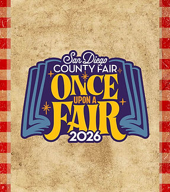

Family-Friendly Entertainment
Live music, performances, hosts and community-centered programming for all ages.
San Diego County
San Diego is the original home of Out at the Fair—a tradition of community, visibility and all-ages entertainment inside the fair experience.

Where the story began
The first informal gathering at the San Diego County Fair in 2011 grew into the Out at the Fair tradition. Past celebrations paired community organizations and family-friendly entertainment with the full fairgrounds experience. 2027 details will be posted here once officially announced.
Join the mailing list so future official information reaches you when it is available.
What to expect
Live music, performances, hosts and community-centered programming for all ages.
Local LGBTQ+ organizations and allies sharing resources, connection and support.
Out at the Fair is designed as part of the larger fair, so guests can enjoy the full grounds.
Confirmed 2027 information will be posted here and shared through official OATF channels.